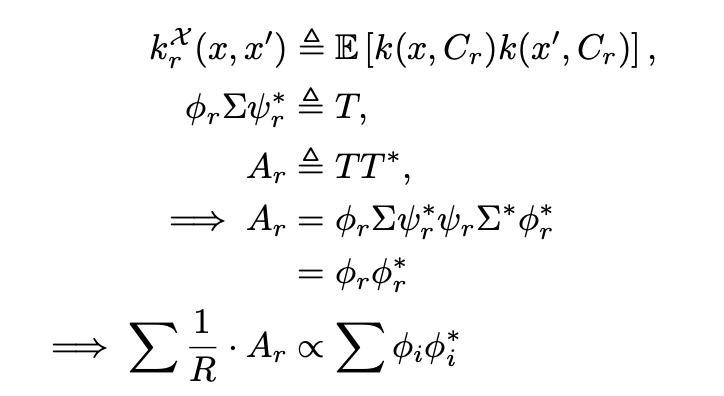
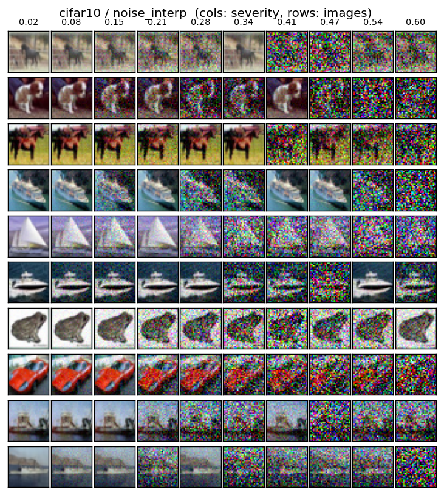

|

|
Deep Preemptive Exploration
We pose exploration and exploitation in stochastic, controllable settings as a problem
of experimental design.
One problem, though-- the experimental design toolkit demands you compute and marginalize log likelihoods under
your model. And your model is a neural network if your setting is complicated enough.
This obstacle is more pervasive than you might realize. It is a generic form of 'expected log density ratio'
(ELDR) estimation. We analytically characterize this problem at large and suggest some novel algorithms.
In the other direction, we consider what happens when we do have black-box ELDR or LDR estimation--
how do we optimize our policy without succumbing to LDR_hat != LDR bias?
- Under submission (NeurIPS 2026)
- Under submission (NeurIPS 2026 Evaluation & Benchmarks Track)
- Under preparation (2026)
- Possible spin-off under preparation (2026-27)
|
|

|
Contextures
Recent results show that learning correspondences reduces to spectral decomposition of an implicit kernel
over the input-context space. Most prior work analyzes a single context variable, matching the typical
approach for natural data, e.g. unsupervised pretraining with data augmentations in computer vision,
autoregressive modeling in natural language processing, and supervised finetuning.
For structured data, practitioners typically rely on heuristics to compose various sources of context
and structure. Can we derive a more principled treatment for multi-context representation learning?
Manuscript under preparation. (2026)
|
|

|
Conformalized Robustness for CNNs
Exchangeability is somewhat unusual. Conformal prediction, especially in typical neural-net
settings like image classification, often uses the stronger and more brittle i.i.d. assumption.
If you know a priori the modalities of perturbations you wish to be robust to, plain exchangeability is
actually easier to enforce than you might realize. We show this for visual tasks on CNNs,
and use that principle to encourage conformal calibration during train and test time.
We further show the saliency of the features exposed by our train-time calibration by using it
as a self-supervised pre-training signal.
10-707: Advanced Deep Learning (S26) course project. Extended manuscript under prep.
|
|
|
review-bot
-
MCP-driven RAG + Claude code skills/hooks pipeline that simulates reviews for
paper submissions given traces of reviews/rebuttals at a representative venue.
-
SFT routine for small LLMs to specialize in review/rebuttal simulation.
Private, available upon request. (If you are worthy...)
|
|
|
citetools
Live collection of literature review tools. Currently implemented: connecting papers between
user-defined cliques of seed papers. (Various traversal modes, including using sentence embeddings
as heuristics).
GitHub repository: click.
|

|
An Information-Theoretic Bridge Between Neural and Symbolic AI
Neural agents are great at System 1 thinking: fast, intuitive, statistical.
Not so much at System 2 reasoning, which is slow, deliberate and logical.
Our brains can learn from remarkably few samples and make interpretable, verifiable decisions based
on sound logical reasoning. The best of foundation models even after being trained on unfathomable
amounts of data are not remotely reliable, even with fancy feedback-loop-chain-of-thought prompt
tricks.
So how do we get there?
Optimizing over discrete logic typically implies a combinatorial search is needed somewhere--
probably NP hard, not good. Can we make things better by modeling probabilistic logical distributions?
Final-year thesis, IIT Kharagpur.
|

|
Amelia
Intent Prediction for Airport Surface Operations.
My role in this large-scale Boeing project was to come up with an efficient map-matching algorithm to
induce GIS information into a trajectory prediction model. Also, a way to use English rules via LLM
as a heuristic for procedural bias in Popper, an inductive logic programming system.
Summer Research, Robotics Institute, CMU
|

|
Entity Augmentation
Imagine a database whose columns belong to different organizations.
How do you learn something meaningful in this system? Sure, you could collect all the
features at a central location and use standard machine learning. But what if they don't share?
Vertical Federated Learning is intricately coordinated. You need to figure out rows everyone knows some features
for (without leaking the keys). Then, on every training iteration you need to arrange matters so that
everyone is passing their features pertaining to the same key, so that the aggregator knows what to
predict.
Or, you could just use Entity Augmentation.
GLOW @ IJCAI 2024 (Archival) and HoTDiML @ ICDCS 2025
|

|
Decoupled Vertical Federated Learning
Vertical Federated Learning is not easy.
All it takes is one connection or participant to fail and the whole thing crashes. Also, if one of
your participants is curious, they can learn a lot about others' data from gradients the aggregator
sends them. And of course there's the whole bore of entity alignment (and therefore limitations on
sample size). It's hard enough cross-silo. Much less scaled up cross-device.
Decoupled Vertical Federated Learning is immune to these.
arXiv (short version in SSL @ NIPS 2024)
|

|
Internet Learning
We're wasting the Internet by merely passing data around. Why don't we compute, too?
Internet Learning is a paradigm for learning over decentralized networks. Our baseline proposal is
a collaborative backpropagation over the whole network. But you are encouraged to propose something
better.
Learning on dynamic networks with unreliable and unavailable edge computation is not trivial. This work is
a first step towards fixing that.
LLW @ ICML 2023
|